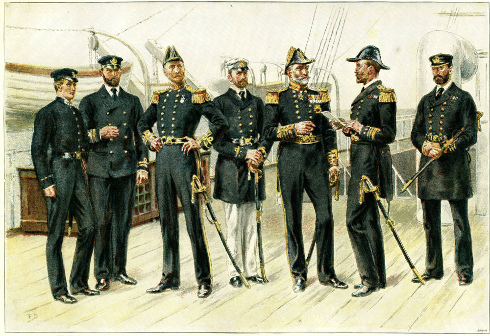

Maritime Union (Arkand)
Maritime Union officers, 512 Frank Dadd, Public domain
The Maritime Union, or Arkandic Maritime Union (AMU) is a national syndicate of Arkand.
they own all civilian and military ships in arkand. theyre also in charge of aircraft bc they had to put it somewhere. often helps ACSS and is in conflict with the army directorate about where exactly the boundary is